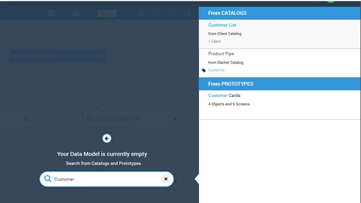
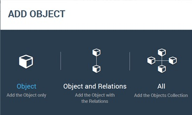

You can search for objects in the data models of existing prototypes.
The search results are objects in prototypes whos nmae or business tag matches the entered string. You can add one selected object or one selected object and all its realated objects in the data model, for example, its navigations, or all objects in the data model of the selected object.
